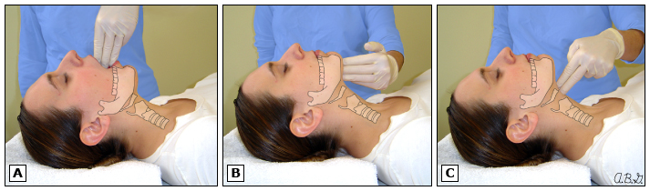

Sedation in the ICU

Topics Covered
- Rapid sequence induction for emergency intubation
- Conscious sedation for procedures (lines, tubes, cardioversions, scopes)
- Sedation for mechanical ventilation
Rapid Sequence Induction (i.e. induction for intubation)
RSI is performed in patients at increased risk of gastric aspiration (read: ALL critically ill patients). The goal is to minimize time between onset of unconscious state and tracheal intubation.
RSI Timeline
- Preoxygenation
- IV hypnotic (e.g. PPF)
- IV rapid-onset NMB (e.g. succinylcholine or rocuronium)
- Cricoid pressure (debated -- SRMA shows no measurable impact of this maneuvre)
- modified RSI: positive pressure mask ventilation (<20 cm H2O)
- Tracheal intubation and confirmation
- Proceed to Sedation in the ICU > Sedation for mechanical ventilation
Medications in RSI
The goal is to have a non-titrated dose of rapid onset (45-60 seconds) IV medications to achieve both total unconsciousness and complete muscular relaxation.

- IV induction agent (pick one)
- Propofol. The de-factor choice. Causes dose-dependent hypotension and bronchodilation. Few side effects otherwise (propoful infusion syndrome long-term). Dose is 1.5-3 mg/kg (e.g. 100-300 mg)
- Midazolam. Potent amnesic property. Causes dose-dependent myocardial depression. Frequently underdosed. Dose is 0.2-0.3 mg/kg (e.g. 10-20 mg)
- Ketamine. Stimulates catecholamine release, causes bronchodilation. Could be considered particularly for bronchospasm, septic shock, and hemodynamic compromise. Dose is 1-2 mg/kg.
- Etomidate. Excellent sedation with little hypotension. Suppresses adrenal cortisol production - be wary of this! Dose 0.3 mg/kg
- IV opioid - consider fentanyl 3 mg/kg IV over 30-60 seconds as well to optimize the patient.
- IV NMB
- Rocuronium 1.5 mg/kg (e.g. 100 mg). Time to intubation level paralysis is 45-60 seconds with this dose, and effect last ~45 minutes. Multiple studies show it creates intubation conditions very similar to succinylcholine.
- Succinylcholine 1.5 mg/kg (e.g. 100 mg). Time to intubation level paralysis is 45-60 seconds with this dose, and effect last ~6 minutes.
Procedural conscious sedation
The approach here will depend upon (1) baseline sedation status (awake, sedated?), (2) procedure invasiveness and pain (chest tube), line, wound debridement), (3) hemodynamic and respiratory status.
Importantly, the CAS practice guidelines state that it is unacceptable for a single physician to administer an anesthetic, including deep procedural sedation, and simultaneously perform a diagnostic or therapeutic procedure, except for procedures done with only infiltration of local anesthetic and/or minimal sedation.
Equipment
- at the bedside
- oxygen source and administration equipment
- suction setup
- basic airway equipment (ambu-bag, face mask, oral airways, SGA)
- IV setup
- Medications including reversal agents
- monitoring (pulse oximetry, cardiac monitory, NIBP)
- (waveform) capnography is recommended for moderate sedation and required for deep sedation
- easily available
- advanced airway cart (laryngoscope and ETTs)
- resuscitation card with defibrillator and resuscitation drugs
Evaluation
- PMHx, Meds, Adverse Rxns and allergies
- fasting status and last meal. Per general CAS/ASA guidelines, moderate or deep sedation warrants fasting:
- 8 hours post heavy/fatty meal
- 6 hours post light meal (defined as toast or cereal with clear liquid) or full fluids
- 2 hours post clear fluids
- ASA classification, OSA risk
- Wt, baseline VS
- Physical examination including airway assessment
- LEMON mnemonic: Look externally, Evaluate 3-3-2, Mallampati, Obstruction/Obesity, Neck mobility
- 3-2-2 rule for difficult airway. The patient can open their mouth sufficiently to admit 3 of their own fingers, The distance between the mentum and the neck/mandible junction (near the hyoid bone) is equal to the width of 3 of the patient's fingers, The space between the superior notch of the thyroid cartilage and the neck/mandible junction, near the hyoid bone, is equal to the width of 2 of the patient's fingers.
- Risk of complications from sedation:
- ASA > 3
- Morbid obesity, OSA, pregnancy
- severe neurologic impairment or CV/respiratory disease
- known or suspected difficult intubation or ventilation
- invasive or prolonged procedure
- high risk of aspiration (e.g. SBO, full stomach, GERD, DM/gastroparesis, hiatal hernia, GOO, esophageal pathology, increased IAP)
Procedure
Adjunct Care
- Routine administration of supplemental oxygen by nasal cannula or high-flow face mask is strongly recommended for all patients undergoing procedural sedation and is required for deep sedation (CAS 2018)
Medications
- Should be provided in small boluses or by a titrated continuous infusion to achieve the minimum level of sedation required. Consider adjunct local or regional anesthesia in addition to sedation for particularly painful procedures.
- various combinations of medications can be used and should be short-acting and titratable, and be wary of medication synergism
- IV sedative/dissociative/hypnotic +/- IV short-acting opioid
- No CAS recommendations are made as to the specific medications to be used. In general, consider and be knowledgeable about how to use and rescue from the following medication choices:
- PPF
- Midazolam
- Fentanyl
- Ketamine
- PPF + Midazolam
- PPF + ketamine
- Midazolam + fentanyl (consider over PPF for longer procedures)
Propofol
- Acts within 40 seconds, lasts 6 minutes. Sedative/amnestic without analgesia.
- Loading dose is 0.5 to 1.5 mg/kg slow injection, with 0.25 to 0.5 mg/kg q1-3 minutes PRN. For example, 25-50 mg IV then 25 mg IV q1-3 minutes PRN.
- Reduce dosing by 20-60% for older adults. The initial bolus should be maximum 0.5 mg/kg for these patients.
Midazolam
- Acts within 2-5 minutes, lasts 30-60 minutes. Anxiolytic/amnestic without analgesia.
- 0.02 to 0.03 mg/kg. In adults, this is generally 0.5-1.0 mg per dose and titrated to effect q2-5 minutes.
Fentanyl
- Acts within 2-3 minutes, and lasts 30 to 60 minutes. Pure analgesic without amnestic properties.
- When used in combination with a sedative for procedural sedation, dose is 0.5 mcg/kg (25-50 mcg) IV push boluses every 2 minutes until sedation/analgesia achieved.
Ketamine
- Rapid onset, lasts 10-20 minutes. Sedation, analgesia, and amnesia with preserved CV status and respiratory tone and ventilation status.
- Avoid in schizophrenia.
- Dose is 1-2 mg/kg over 1-2 minutes then 0.25 to 1 mg/kg q5-10 minutes. For example, 100 mg IV loading then 25-50 mg increments afterwards. In combination with other agents, use the lower end of these doses.
- Emergence reactions (distressing disorientation, dreamlike experiences, or hallucinations) can be prevented with MDZ (1-2 mg) or haloperidol (5 mg)
- Pretreatment with ondasetron 4 mg x 1 can be useful for prevention of N/V (4% ) associated with ketamine (occurs while awake)
- Can lead to laryngospasm (rare).
Complications
- Respiratory depression
- CV depression
- Aspiration
- Nausea and vomiting - consider PONV evaluation and prophylaxis/treatment
Sedation for mechanical ventilation
PADIS 2018 Guideline Recommendations
- Target light levels of sedation (vs deep) in mechanically ventilated patients. No universal consensus definition of light sedation on the RASS exists, but generally in studies this corresponds to RASS -2 to +1
- use daily sedative interruption (DSI) protocols (target RASS -1 to +1) and nursing-protocolized targeted sedation to maintain light sedation.
- choice of sedatives
- cardiac surgery patients - PPF preferred over benzodiazepine
- mechanically ventilated medical/surgical patients - PPF or DEX recommended over benzodiazepines (shorter time to extubation, higher risk of self-extubation, higher rates of asymptomatic bradycardia with DEX)
- Studies to know:
- PPF vs BZD - no landmark trial.
- DEX vs BZD - SEDCOM, MIDEX, MENDS
- PPF vs DEX - PRODEX, MENDS2
- current evidence suggests that for light sedation, DEX = PPF for most general ICU patients. Be wary of bradycardia. For deep sedation, DEX monotherapy is likely not enough based on pharmacology/anecdotal evidence (but not examined in RCTs)
- Studies to know:
Current Evidence Base
MENDS (JAMA 2007)
- In mechanically ventilated patients, DEX improved coma-free days and time within goal sedation compared to LORAZ, but required more open-label fentanyl and had a higher incidence of bradycardia
MENDS2 (NEJM 2021)
- this multicentre (N=13) study randomized sedation for mechanically ventilated patients (N=422) with sepsis to either DEX or PPF based strategies with target RASS approx 0 to -2
- overall, there was no difference in number of days alive without delirium or coma at 14 days, ventilator-free days, death at 90 days, or cognitive status at 6 months
- safety end points were similar betweeen DEX and PPF
- SUMMARY: Among mechanically ventilated adults with sepsis who were being treated with recommended light-sedation approaches, outcomes in patients who received dexmedetomidine did not differ from outcomes in those who received propofol.
References
- Parrillo Critical Care Medicine
- UpToDate (sections on RSII)
- PADIS Guidelines
- Procedural sedation: a position paper of the Canadian Anesthesiologists’ Society (2018). https://www.cas.ca/CASAssets/Documents/Practice-Resources/Guidelines/12630_2019_1507_MOESM5_ESM_Appendix-6.pdf
- Kingston Gen Hospital policy on adult procedural sedation: https://www.corhealthontario.ca/Adult-Procedural-Sedation-Policy.pdf
- CADTH Sedative Agents During Medical Procedures Guidelines (2020): https://www.cadth.ca/sites/default/files/pdf/htis/2020/RB1462%20Procedural%20Sedation%20Guidelines%20Final.pdf
- Procedural sedation in adults outside of the operating room: General considerations, preparation, monitoring, and mitigating complications - UpToDate & Procedural sedation in adults outside of the operating room: Medication selection, dosing, and discharge criteria - UpToDate